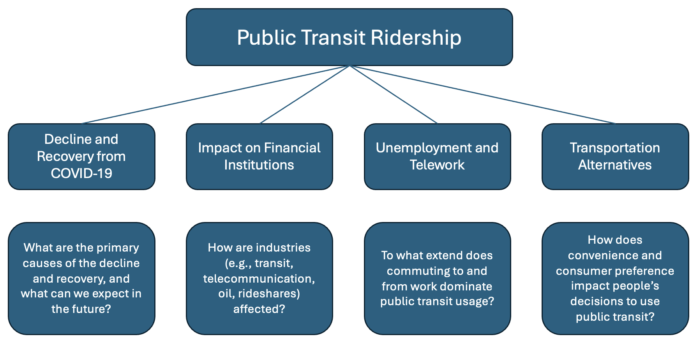
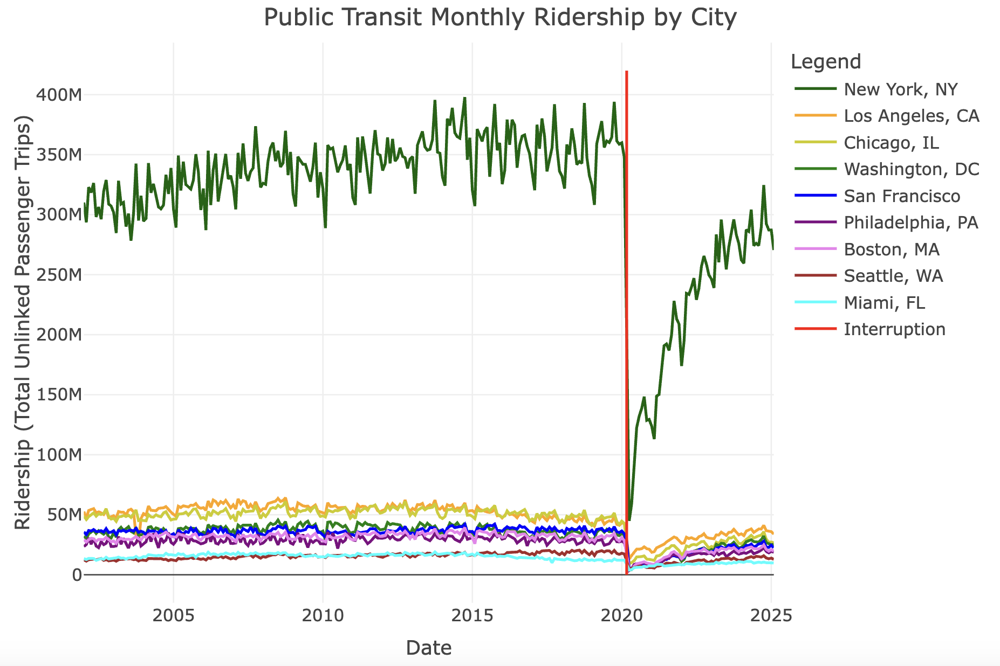

Conclusions
The Big Picture
This project set out to analyze the post-pandemic rebound in public transit ridership and make forecasts based on the factors that most heavily impact these phenomena. As a reminder, the following “big picture” diagram was used as guidance for how to address this topic:

Ultimately, we found that forecasting the future proved to be difficult, but we can expect a continued rebound in ridership at varying rates based on the characteristics and motivations of each metropolitan area in the U.S. Financial institutions and the employment landscape underwent similar shake-ups during the same period, although their value as predictors proved to be insufficient due to the large scale of these factors when viewed at a national level. When looking at transportation alternatives, it is clear that public transit needs to be a viable competitor to methods that are often seen as more convenient, which is a main driver of consumer choice. These findings will be explained in greater detail below.
Time Series Modelling Conclusions
Ultimately, some of the most telling results came from the last two pages of this portfolio. Due to the overwhelming imposition that COVID-19 had on public transit ridership, models that incorporated either complex deep learning techniques or accounted for this interruption proved to be most useful. For data scientists interested in applying these results, that indicates that this data is quite complicated future forecasting requires advanced methods to obtain reliable results.
As this relates to the real world, one of the most telling plots is the one illustrating public transit ridership in the top nine cities by volume of riders. Each city is more closely analyzed on the Interrupted Time Series page, but the overall plot is shown below.

The first takeaway from this is the fact that population and density do not necessarily automatically result in large ridership numbers. Notable absences like Dallas and Houston, Texas, both of which are top five metropolitan areas by population, show us that there are key distinctions between the cultures and public transit offerings of cities. In some cases, public transit is just not seen as a viable option when compared to other methods of transportation.
Seattle, on the other hand, pales in comparison to some of these cities in both population and density. However, it notably had a steady rise in ridership prior to the pandemic, followed by one of the more rapid rebounds, albeit still lagging far behind pre-2020 values. In this case, Seattle launched an expansive light rail system that has served some of its most dense areas, which has been constantly expanding since its open in 2009. This is a great use case for ways in which policies and culture changes can instigate greater usage of public transit.1
Another city to look at is New York City, which is certainly the most populous and dense city, but not to the degree that is shown in the plot above. The fact that ridership in New York dwarfs all others is largely due to the comprehensive coverage of the MTA Subway system, which accounts for more than half of the total ridership in the metropolitan area in any given time step. However, a great deal of this is a result of the access to public transit outside of the five boroughs, as residents of Jersey City, Newark, Long Island, and other surrounding areas are still well-served by public transit systems. Additionally, the city has robust systems of buses and even ferries, offering transportation options for all kinds of use cases.
Finally, Los Angeles serves as an example of a city where ridership was quickly declining prior to the pandemic. In this case, current values have already returned to theoretical values had the pandemic not occurred, indicating that many riders use it strictly out of necessity. Nevertheless, this shows us what can happen in a city that does not particularly emphasize the need to provide these options to its residents.
Final Takeaways
A key takeaway from this portfolio is that people’s use of public transit is largely based on a combination of necessity and convenience. We have found that a great deal of public transit usage is driven by the need to commute to work, which explains why it’s so vital to have these systems in place. However, as explained in our literature review, there are many cases where public transit is simply not considered a viable alternative to other methods of transportation, such as driving a car or using a rideshare service.2 Generally, if affordable, convenient, and fast public transit is made available, it is used. Additionally, cities that did not previously have these services can implement them and see immediate results.
Ultimately, public transit is known to be a vital part of infrastructure for several reasons, including affordability, air quality, noise pollution, traffic congestion, and many more. Thus, it is crucial that ways to make accessible systems viable are explored in order to serve growing urban populations.
Potential Next Steps
The first example of a potential improvement for this project would be to incorporate more metropolitan characteristics as non-time series data in the analysis. This could include population, average income, climate, unemployment, or any other city-level statistics that could provide a more data-driven approach to answering why certain public transit trends occur. This may require a narrowing of scope to focus more greatly on granular traits of each city and be better equipped to make suggestions on how to improve residents’ lives.
While we are now more than five years past the onset of COVID-19 and its consequences, there would still be value in continued analysis with more time past since the interruption in our data. There are a few related policies that have taken place recently which would be very useful to analyze given a greater time frame after their implementation. These include the introduction of New York City’s congestion pricing in lower Manhattan as a way to dis-incentivize car usage in population-dense areas, as well as the return-to-office mandates for federal workers, which has highly impacted Washington, D.C. residents. As of now, these policies remain in their infancy so their true effect has not yet materialized in the data, but it would be fascinating to see how they impact public transit ridership in the future.
Finally, this project would be better-served with more robust ways of eliminating the effects of COVID-19 to specifically focus on the before and after periods. As mentioned above, traditional methods of univariate and multivariate time series analysis struggled to produce convincing forecast due to this huge intervention. We now know that the pandemic is far from the only explanation of recent ridership trends, so it would be useful to fit models that are capable of coming to this same understanding.
References
Footnotes
Kershner, J. (2019, January 3). Seattle’s light-rail era begins as Sound Transit’s Central Link Line. Seattle’s light-rail era begins as Sound Transit’s Central Link line carries its first passengers on July 18, 2009. https://www.historylink.org/file/20711↩︎
Hensher, D. A., Rose, J. M., Leong, W., Tirachini, A., & Li, Z. (2013). Choosing public transport—incorporating richer behavioural elements in modal choice models. Transport Reviews, 33(1), 92–106. https://doi.org/10.1080/01441647.2012.760671↩︎